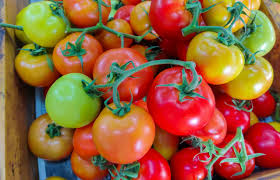
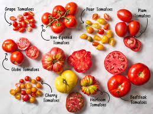

Much More than Ketchup
Why thier Important
Tomatoes play a crucial role in both nature and cooking, serving as a key component in many ecosystems and culinary traditions. In nature, they are vital for attracting pollinators, such as bees and butterflies, which help facilitate the reproduction of various plant species. Additionally, tomatoes provide essential nutrients and habitat for a range of wildlife, contributing to biodiversity. In cooking, tomatoes are cherished for their versatility, flavor, and nutritional value, featuring prominently in countless dishes across cultures, from sauces and soups to salads and salsas. Rich in vitamins C and K, potassium, and antioxidants like lycopene, tomatoes offer numerous health benefits, making them a staple in diets worldwide. Their ability to enhance the taste and color of a dish underscores their importance as both a culinary ingredient and a natural resource, bridging the gap between nature and gastronomy.

Fruit or Vegetable
The debate over whether tomatoes are fruits or vegetables has sparked considerable discussion among botanists, chefs, and consumers alike. Botanically speaking, tomatoes are classified as fruits because they develop from the ovary of a flower and contain seeds. However, in culinary contexts, they are often treated as vegetables due to their savory flavor profile, which aligns more with other vegetables used in salads and cooking. This confusion came to a head in 1893 when the U.S. Supreme Court ruled that tomatoes should be taxed as vegetables, not fruits, based on their common culinary use. Proponents of the fruit classification argue that understanding tomatoes as fruits can lead to a better appreciation of their nutritional benefits and versatility. Ultimately, whether seen as a fruit or a vegetable, tomatoes are a beloved food item with a significant impact on cuisine around the world.
My Favorite Tomato Dishes
- Salsa
- Tomato Soup
- Pizza
- Lasagna